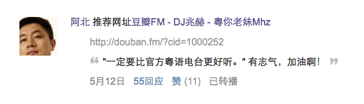

先点击打开视频听首歌，可缓解阅读本文的枯燥感。
很多人留意到我们是听了晓禾依树电台开始的，欣慰的说，大部分对电台的反馈都还挺好的。但后来我们不做了，一个是没时间，另外一个是找不到定位。

过去出于喜爱就开始做音乐分享，没意识到一些问题，后面了解的事情多了后，发现“音乐推荐”这个事，还带着一点心虚。当下的共识是，未经授权拿别人的歌在自己节目里放，是侵权行为。
比如以前我们上的苹果ITunes平台，就明确不允许这类节目上架。而国内的一些音频平台，似乎处于灰色地带。但由于我们脸皮薄，也不希望哪天有人过来指责我们，搞得心情不好，所以开始对这种做法产生犹豫。 而且小圈子做也就罢了，一旦听节目的人多了，或者像如今打赏功能的加入，牵涉的利益关系就很难扯清楚了。
现在看回文化界三大块：书、影、音。围绕前两者的都有大量做的不错的自媒体，不管是内容上，还是数据上。比如有毒舌电影这类超级大号，商业化上也不成问题。 而音乐、乐评似乎看起来就尴尬了。业内有能力的乐评人，当然是去参加这几年如火如荼的音乐娱乐节目了。但普通的音乐爱好者、乐评人，少有能通过自媒体获得盈利和名声。
我本身有关注几个音乐类、摇滚类的公号，从他们某些 10W+ 的文章也能看出有一定的粉丝基础。但我觉得有不少尴尬的地方是： 首先音乐类公号推荐音乐的方式，大多还是要通过讲述背后的故事来实现。这点跟电视上选秀节目还挺像的。简单来说，一首歌如果背后没有一个感人的故事或者创作历程，就会显得平庸不少。 评论书、电影，讲故事就很顺其自然，毕竟作品本身往往就蕴含故事。懂行的讨论导演手法风格，不懂行的人也能讨论故事情节。而音乐本身并不蕴含一个很具体的故事。无视觉画面之余，又因鉴赏能力、口味取向的不同而效果差别巨大。
另外电影既可以通过大量截屏 + 文字来重组一遍作品。还可以像谷阿莫这种知名博主一样，通过剪辑制作视频进行传播（这种行为不知是否有侵权嫌疑）。而音乐就很难做这种解构和重混。
再者一首5分钟的音乐，你写一篇3分钟的评论也显得怪怪的。有这时间都可以把作品给放一遍了，是好是坏当下即有感受，何必听你吹。你看那些介绍电影短片的，也不需要长篇评论，读者想要的是观看链接。
所以做大众化的音乐鉴赏，似乎都会以很绕的方式切入。比如谈论创作背景如何艰辛，谈论歌词文本；还有娱乐节目里将音乐竞技化，比如飚高音，把抽象的东西指标化，方便议论和比较。
当然还可以转载MV（我还不是很清楚擅自转MV为什么不算侵权，转mp3就侵权），MV本身类似小电影，会产生具象的话题。还可以做所谓牛人翻唱，豆瓣还真有些音乐人是这样出名的。这样翻唱传播为什么又不侵权呢？（求懂行人指点） 总的来说，在电影爱好者围绕着产业都能赚到钱的年代；音乐爱好者还大多不知道可以和音乐从业者如何共同繁荣。音乐，这个消费得最多的文化产品，还真和大多数人使用它的场景很贴切，只是一种背景陪伴。
文章一开始的音乐来自 Linda Perhacs 今年的新专辑。这首动听的歌反映了文中说的尴尬：Linda Perhacs 28岁出第一张专辑，没什么反响，今年她70岁了。按主流逻辑，这隐姓埋名的几十年，想必有跌宕起伏的人生故事吧？ 但google后发现她一生都很平淡，却又很美好。